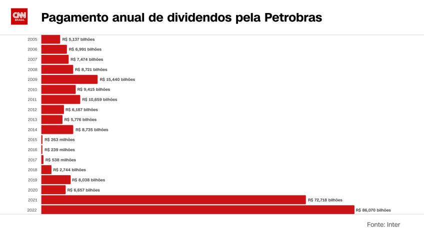
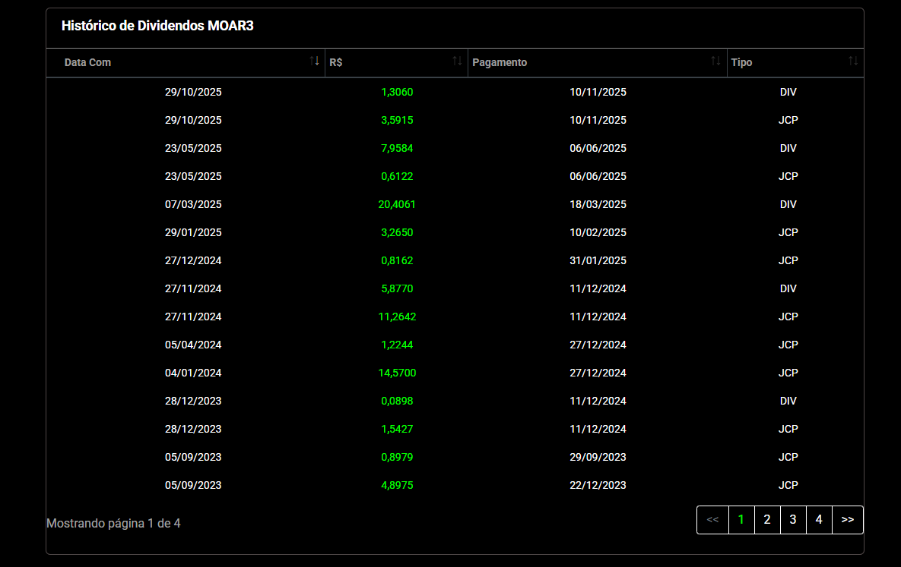

O Que São Dividendos e Como Funcionam? Guia Completo para 2026

Atualizado em Abril de 2026 • Leitura de 12 min
Investir em ações e FIIs que pagam bons dividendos é uma das melhores formas de gerar renda passiva e construir patrimônio a longo prazo. Neste guia expandido, explicamos o básico, mostramos exemplos reais de 2025 e damos dicas práticas para 2026.
O Que São Dividendos?
Dividendos são uma parcela dos lucros da empresa distribuída aos acionistas proporcionalmente ao número de ações que possuem. No Brasil, empresas de capital aberto (como Vale, Itaú e Petrobras) costumam distribuir parte do lucro líquido.
- Ações ON/PN e FIIs: Ambos geram proventos.
- Isenção de IR (até 2025): Dividendos de ações eram isentos para pessoas físicas. A partir de 2026, há tributação de 10% sobre valores acima de R$ 50 mil/mês por empresa (com regras de transição).
- Renda passiva real: O dinheiro cai automaticamente na sua corretora sem você precisar vender nada.
As 3 Datas Importantes de exemplos para saber quando Receber seus Dividendos de Ações

- Data de Anúncio: Empresa divulga o valor e datas.
- Data Ex-Dividendos (Ex-Div): Último dia para comprar a ação e ter direito ao provento. No dia seguinte, o preço geralmente cai pelo valor do dividendo.
- Data de Pagamento: O valor é creditado automaticamente na conta da corretora.
Exemplo: Se uma ação vale R$ 50 e paga R$ 2 de dividendo, na data Ex-Div o preço tende a cair para ~R$ 48 (tudo mais constante).
Por Que Investir em Dividendos? 6 Benefícios
- Renda extra recorrente (ideal para aposentadoria)
- Efeito bola de neve com reinvestimento
- Empresas maduras e mais estáveis
- Diversificação da carteira
- Proteção parcial contra inflação (muitas empresas aumentam proventos)
- Não depende só da valorização do preço da ação
Artigo 1: As Ações que Mais Pagaram Dividendos em 2025
Em 2025, a Vale (VALE3) liderou em volume absoluto, distribuindo mais de R$ 17,7 bilhões. Já em Dividend Yield (DY), destaques foram Syn Prop & Tech (SYNE3) com ~54,87%, Vulcabras (VULC3) ~30-35% e Lavvi (LAVV3) ~27,57%. Outros fortes pagadores: Itaú (ITUB4), Itaúsa (ITSA4), Petrobras (PETR4) e incorporadoras como Cyrela (CYRE3) e Direcional (DIRR3).
| Ticker | Empresa | Destaque 2025 |
|---|---|---|
| SYNE3 | Syn Prop & Tech | DY ~54,87% |
| VULC3 | Vulcabras | DY ~30-35% |
| VALE3 | Vale | Maior volume absoluto |
| ITUB4 | Itaú | Consistente e alto volume |
Artigo 2: Como Escolher as Melhores Ações Pagadoras de Dividendos em 2026
Passo a passo prático:
- Dividend Yield (DY): Busque >6-8%, mas priorize sustentabilidade. Fórmula: DY = (Dividendos dos últimos 12 meses / Preço atual) × 100.
- Histórico consistente: Prefira empresas que pagam há 10+ anos sem cortes.
- Saúde financeira: Dívida Líquida/EBITDA < 3x, ROE > 15%, Margem Líquida > 10%.
- Payout Ratio: Ideal entre 50-80% (equilíbrio entre distribuição e reinvestimento).
Use sites como Status Invest, Fundamentus ou Investing.com para screener gratuito.
Artigo 3: Avaliando a Saúde Financeira da Empresa
| Métrica | Boa | Ruim |
|---|---|---|
| Dívida Líquida / EBITDA | < 3x | > 5x |
| ROE (Retorno sobre Patrimônio) | > 15% | < 10% |
| Margem Líquida | > 10% | < 5% |
Artigo 4: Melhores FIIs para Renda Mensal em 2026
FIIs pagam proventos mensais e continuam isentos de IR para pessoas físicas. Destaques de alto DY em 2025/2026 incluem fundos de recebíveis e tijolo como HRES11 (~30%), BRIM11, HGPO11 e outros com yields acima de 10-20% em alguns casos. Foque em fundos com boa gestão, vacância baixa e diversificação.
Dica prática: Comece com FIIs de papel (CRIs) para yields mais altos ou de tijolo para estabilidade.
O que alunos dizem sobre o curso
"Os conteúdos são excelentes e ensinam passo a passo como investir com segurança..."
— Danielle, avaliação na página oficial do curso (Hotmart)"A didática é excelente e o curso realmente cumpre o que promete."
— Rodrigo, avaliação na página oficial do curso"Conteúdo atualizado e muito bem explicado. Recomendo..."
— Wellington, avaliação na página oficial do curso
Acessar o treinamento completo
Primeiro Passo do Investimento
Nota: Este site pode receber uma comissão caso você adquira o curso através do link indicado.